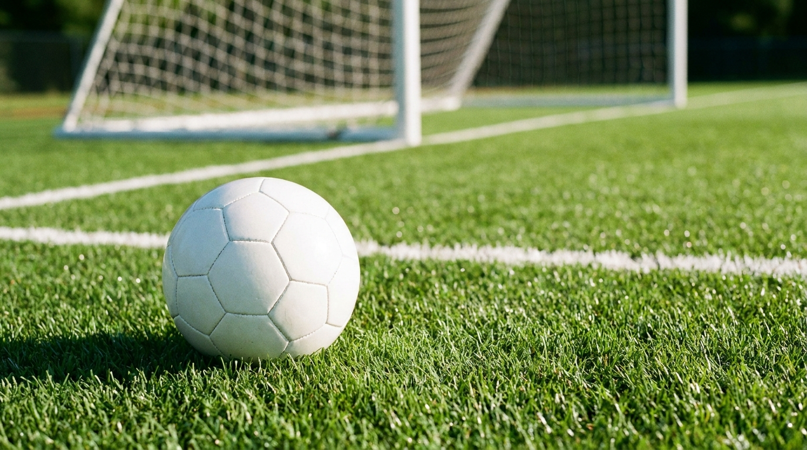

축구란?
발로 공을 다루는 대표적인 영역형 경쟁 스포츠
- 1목표 — 손을 제외한 신체로 공을 다뤄 상대 골에 넣기
- 2인원 — 한 팀 11명(골키퍼 포함)
- 3특징 — 골키퍼만 페널티 박스 안에서 손 사용 가능
세계 1위 인기 구기
FIFA 월드컵
넓은 잔디 경기장

11명이 한 팀이 되어 손을 제외한 신체로 공을 다뤄 상대 골에 넣는 경기. 세계에서 가장 인기 있는 스포츠입니다.
발로 공을 다루는 대표적인 영역형 경쟁 스포츠
필드의 주요 선과 구역
경기는 이렇게 흘러갑니다
전·후반 각 45분(정규). 학교 수업은 시간·인원·코트를 변형해 운영.
센터서클에서 킥오프로 시작. 득점 후엔 실점한 팀이 다시 킥오프.
공이 옆줄 밖으로 나가면 두 손으로 머리 위에서 던져 넣기.
자기 페널티 박스 안에서만 손 사용 가능. 나머지 선수는 손 사용 금지(핸드볼).
역할을 나눠 공격과 수비를 분담
축구에서 가장 헷갈리는 규칙, 그림으로 이해하기
공보다 앞에 있고, 수비보다 앞서 있을 때만 반칙입니다. 우리 진영이거나 공과 나란하면 오프사이드가 아닙니다.
알아두면 경기가 보인다
골키퍼 외 선수가 손·팔로 공을 다루면 반칙.
상대를 차거나 밀거나 넘어뜨림 → 상대팀 프리킥.
경고. 한 경기 2장이면 퇴장.
즉시 퇴장. 그 팀은 한 명 적게 싸움.
페널티 박스 안에서 수비가 반칙하면 → 페널티킥(PK)이 주어집니다.
공을 정확히 주고받는 기본기
발의 어느 부분으로 차느냐가 핵심
공을 발 가까이 두고 운반하기
부상 없이 즐기는 것이 가장 중요합니다
방향 전환이 잦아 염좌 위험. 준비운동으로 충분히 풀기.
무리한 태클·몸싸움 금지. 상대 발을 차지 않기.
정강이 보호대(신가드) 착용 권장.
축구화 끈 단단히, 충분한 준비운동과 수분 섭취.
예시 루브릭 (학교 상황에 맞게 조정)
| 영역 | 평가 내용 | 배점 |
|---|---|---|
| 기능 | 인사이드 패스 정확도 (목표물 맞히기) | 30 |
| 기능 | 콘 지그재그 드리블 기록 | 20 |
| 경기 | 게임 중 패스·움직임·협동 | 30 |
| 태도 | 규칙 준수 · 페어플레이 · 안전 | 20 |
기능·경기·태도를 고루 평가해 실력과 참여를 함께 반영합니다.